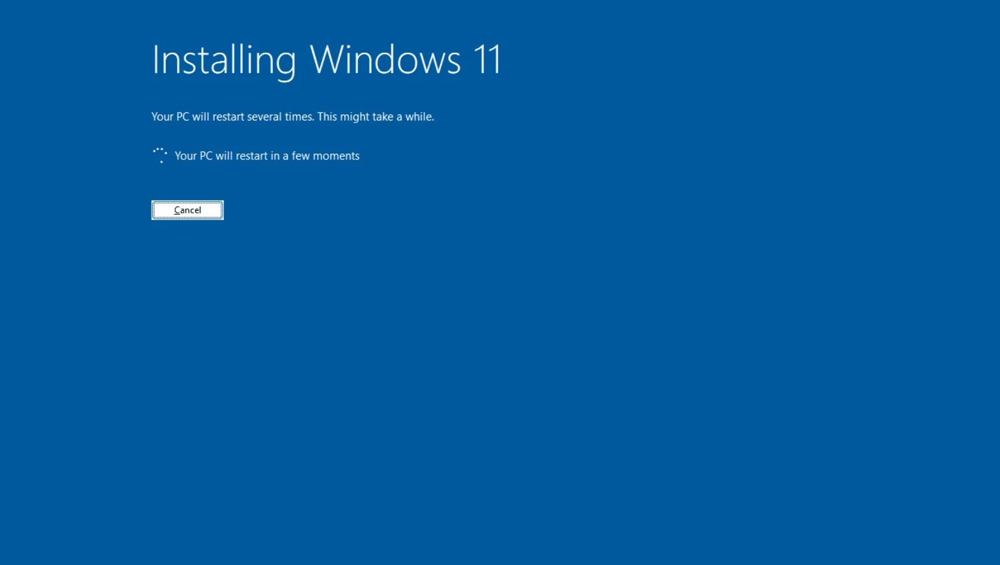

Clean Windows install
A fresh Windows installation on a suitable drive without carrying old problems forward.
VOLTTECH SERVICE / WINDOWS INSTALLATION · PRETORIA
Clean install, drivers, updates and the basic checks that make sure the PC is ready to use when you get it back.
NORTHERN PRETORIA · WONDERBOOM · PRETORIA NORTH

WHY ARE YOU REINSTALLING?
A reinstall can be the right fix, but it shouldn’t be the default answer to every problem.
SELECTED ISSUE
Startup errors, corruption or failed updates have made the system unreliable.
WHAT’S INCLUDED
We don’t stop at the Windows installer. Drivers, updates and basic post-install checks matter too.
A fresh Windows installation on a suitable drive without carrying old problems forward.
Core chipset, graphics, network and device drivers plus Windows updates.
Obvious drive or memory problems are considered so a hardware fault isn’t mistaken for Windows.
Basic configuration so the system is usable and sensible when it comes back to you.
PRICING GUIDE
The final quote depends on whether the job is a repair, clean installation, driver/setup work or recovery from another fault. A Windows licence, data backup or recovery is separate unless specifically included in the quote.
HOW IT WORKS
Important data should be backed up before a clean installation begins.
Windows is installed properly on the correct drive.
We complete the essentials so the machine is ready to use.
WHY VOLTTECH
A slow or unstable PC can also be caused by storage, RAM, drivers, heat or failing hardware. If reinstalling Windows won’t solve the real problem, we’ll say so.
LOCAL SERVICE AREA
VoltTech serves Wonderboom, Pretoria North, Sinoville, Annlin, Montana and surrounding suburbs. Courier-in arrangements can be discussed for selected jobs elsewhere in South Africa.
PRETORIA · WONDERBOOM · PRETORIA NORTH · SINOVILLE · ANNLIN · MONTANAQUICK ANSWERS
It can. Important data should be backed up before the installation begins.
A Windows licence is separate unless specifically quoted. Existing digital activation may reactivate automatically on the same device.
Not automatically. Storage, thermals, startup load or hardware limits can cause the same feeling, so diagnosis may be the better first step.
NEXT STEP
Tell us what the PC is doing. We’ll help you work out whether a reinstall actually makes sense.
Prefer to narrow it down first? Try Signal Scan →